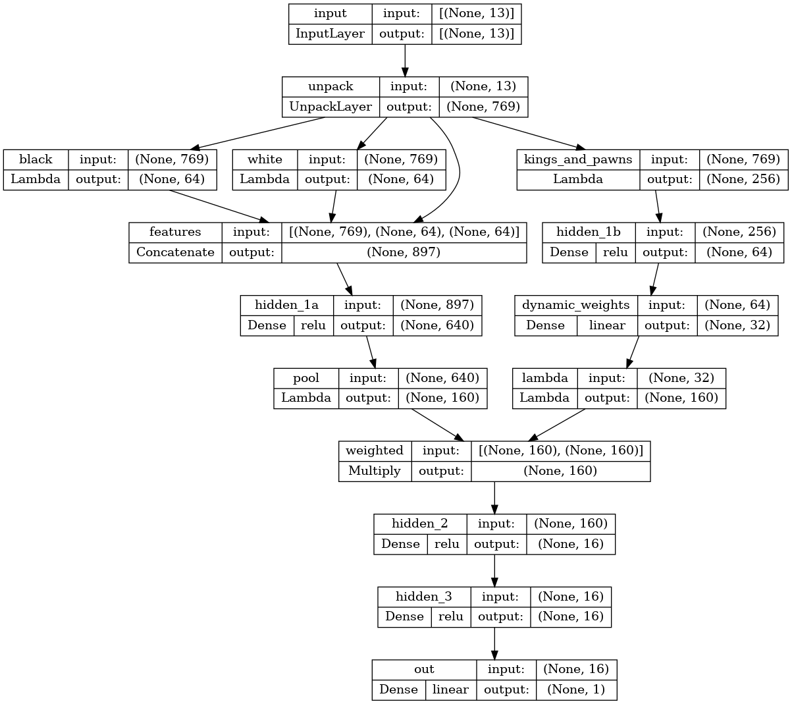
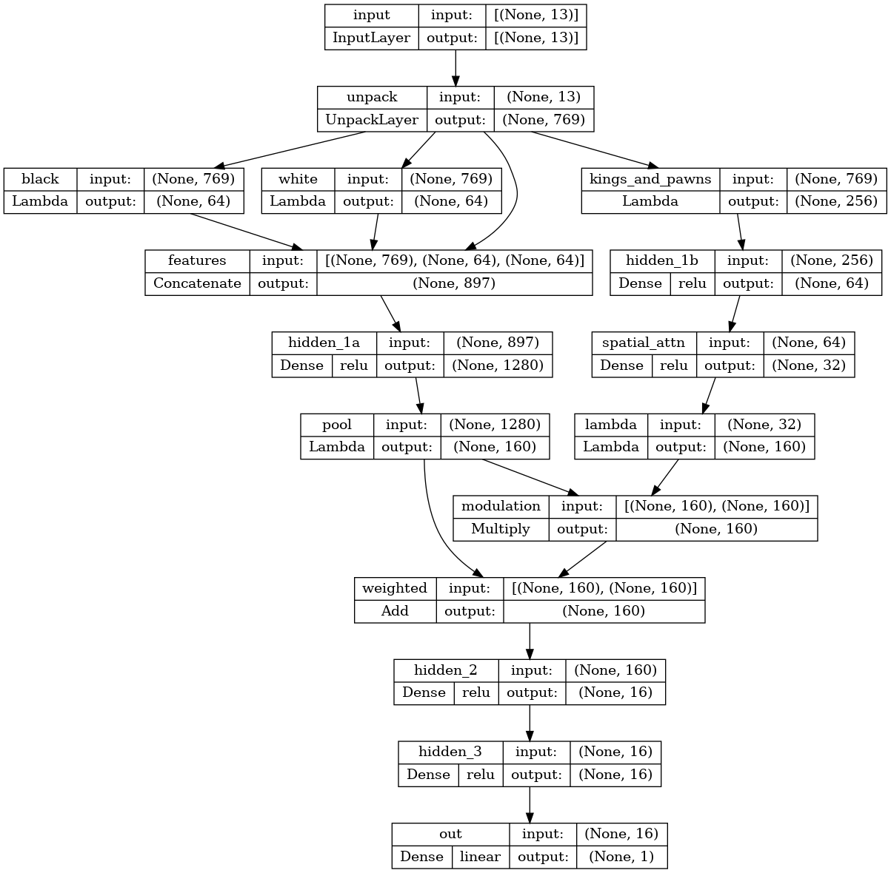
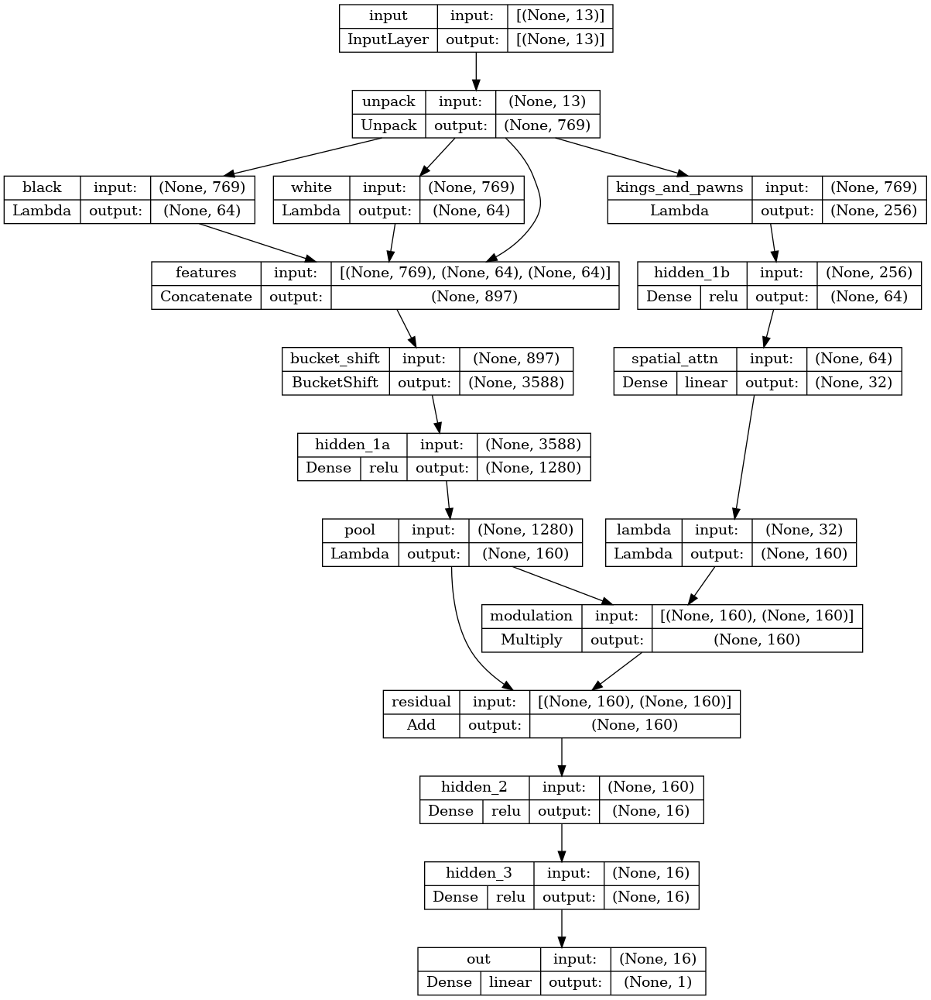
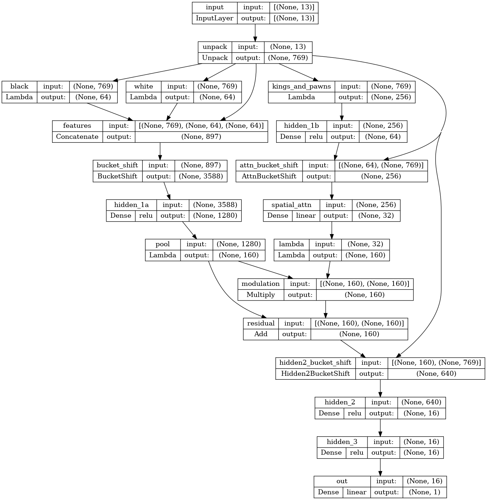
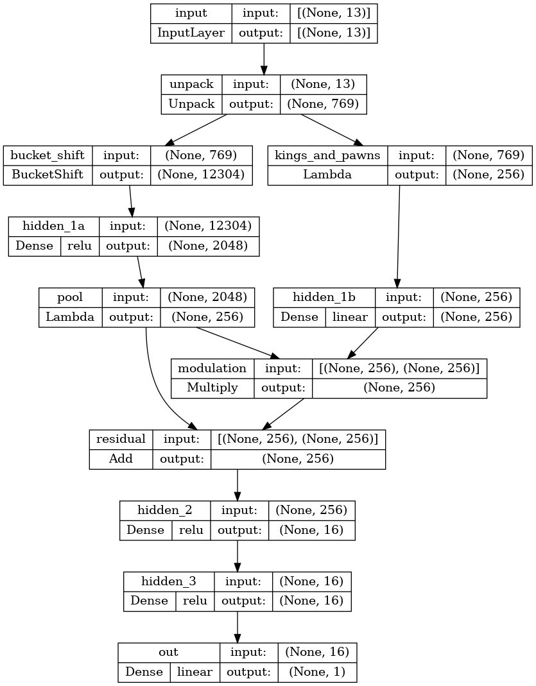
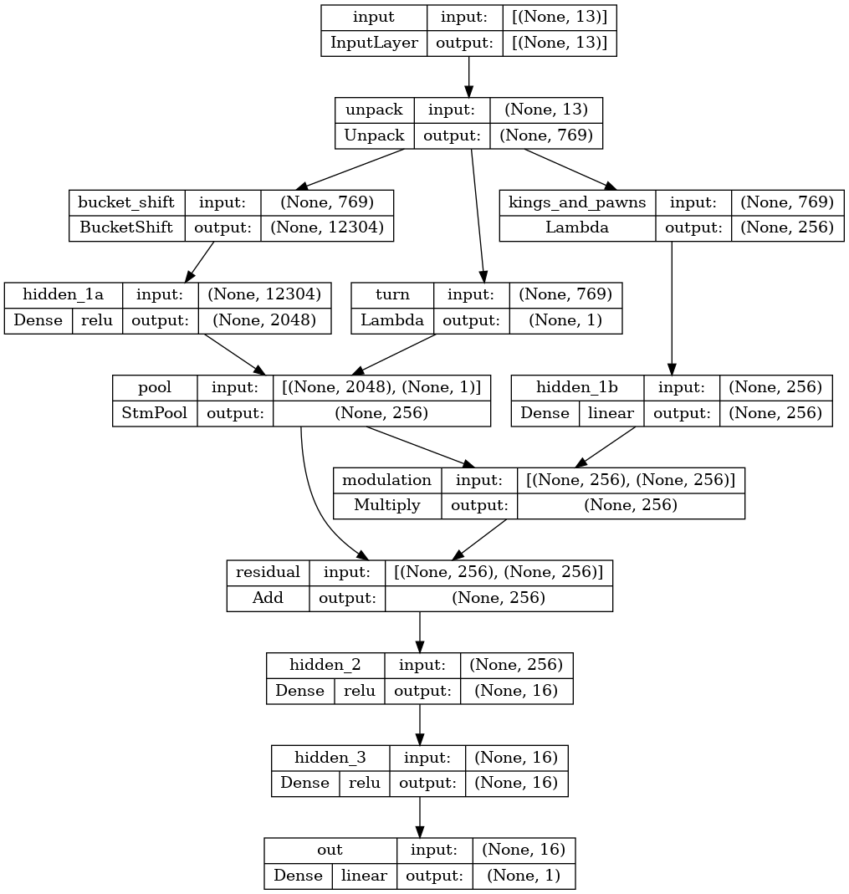

Sturddle
A chess engine I wrote to learn how chess engines work: its history, its architecture, and the experiments along the way.
Why and where it started
I wanted to understand how chess engines work and which algorithms are involved, and the best way I know to learn something is to build it.
Sturddle started as a Python prototype. I took move generation and the other basics from python-chess and wrote the search first. I was intrigued by MTD(f), and curious whether I could write one search "skeleton" that switches at runtime between bare negamax, NegaScout and MTD(f). At first the evaluation was material-only, then a naive hand-crafted eval.
Over time I rewrote the search in C++. Over many more iterations I studied move generation and the rest, and replaced the python-chess parts with my own code. What's left of Python today is a bootstrap script and some glue.
That history explains the name. A sturddlefish is the accidental hybrid of a sturgeon and a paddlefish, and this engine started life as a hybrid too, part Python and part C++.
A C++ engine in a Python shell
To this day Sturddle builds as a Python extension module. That's partly history, but it also enabled a trick I stumbled into more or less by accident.
When I was looking into submitting Sturddle to CCRL for testing, they wanted a Windows executable, not a bunch of Python scripts. So I bundled everything with PyInstaller. Some time later it occurred to me that the compiled engine modules are small next to the network weights and the opening book, so I could ship several of them in one bundle, built for AVX-512, AVX-512 with BF16, AVX2, AVX2 with VNNI, AVX, and a generic x86-64 baseline. At startup, a small boot script (main.py) checks the processor's features and loads the best "kernel". Other engines ship one binary per instruction set and let the user pick; Sturddle picks for you.
PyInstaller also compresses the bundle. In early versions the weights were compiled into every flavor, and compression squeezed out the redundancy. Since 2.3 they're shared across flavors and included once. Quantized weights compress well too, thanks to sparsity and rounding.
I build with Clang on every platform; on Windows, setup.py patches the Python build tools to use clang-cl. Other compilers may work, but I rarely check. MSVC is occasionally useful for its debug runtime checks. In July 2025 its /RTCc check (data lost when converting to a smaller type) found 16-bit overflows in the NNUE code, which I fixed the next day.
The UCI loop is native C++ (uci_native.cpp) by default. The old Python UCI implementation (uci.pyx) and helpers like worker.py are still in the tree as historical reference, but unused.
Strength over time
Move generation: what's magic about it?
When I first read about magic bitboards, I kept asking myself what exactly was magic. Multiply the occupancy by a constant, shift, look up the attacks: isn't that just collision-free hashing? The wiki does call it a perfect-hashing scheme. The "magic" is only the constant, found by trial and error.
So the first thing I did was write my own code generator, which searches for hash parameters and writes the attack tables out as C++. The tables are very large, and as I recall some compilers of the time didn't like that. A few months later I adopted Goutham Bhat's magic-bits library. In December 2025 the generated tables gained a PEXT path for CPUs with BMI2.
Sturddle uses both today. On hardware with PEXT, my generated tables are slightly faster; elsewhere (the generic, AVX and ARM builds) magic-bits wins.
Search: MTD(f), with twists
The default search is still MTD(f). Switching algorithms at runtime survived as a UCI option, visible only when the engine runs with --dev-mode. Three changes to the textbook version seem to matter.
- Bisection. Each pass tests the midpoint between the current lower and upper bound, instead of stepping from the last score. This is Coplan's C*, which Aske Plaat describes on his MTD(f) page, noting that bisection's windows are less efficient than MTD(f)'s choice.
- Re-sorting moves between passes. After every null-window pass, the root's moves are re-sorted using what that pass just learned (
MTDF_REORDER_MOVES). Plaat notes that root move sorting is possible with MTD(f). - What counts as a PV node. The usual test, an open window (
alpha + 1 < beta), rarely fires in MTD(f), because nearly every search is null-window. Engines often conclude that MTD(f) "has no PV nodes". Sturddle also treats the leftmost node as PV, meaning the one reached by taking the first move at every ply. That's the structural definition from Knuth and Moore's 1975 analysis of alpha-beta. Combined with the re-sorting above, the leftmost path follows the latest best line, so PV-specific logic still has something to work with.
I haven't found re-sorting after every pass, or the leftmost-PV idea, described elsewhere, but I haven't read everything, so I don't claim they're new.
Does MTD(f) beat NegaScout here? In my tests, yes. But it's not a fair fight. All the pruning, reductions and heuristics were tuned with MTD(f) as the default, and, embarrassingly, the NegaScout path had nasty bugs until recently. I underestimated how much tuning matters.
Multi-cut, slightly bent
Multi-cut prunes a node when several of its first moves already fail high at reduced depth. A research report proposes trying it only at nodes that produced cutoffs before. Sturddle always tries it, but needs one fewer cutoff (2 of the first 6 moves instead of 3) when the transposition table already holds a lower bound near beta. It's a soft version of the paper's filter.
Late-move reductions vs. the clock
Sturddle didn't scale well at long time controls. My hunch was that late-move reductions were too aggressive and never relaxed, even when there was time to spare.
The reduction table is the classic log(depth) * log(moves) / divisor. Until July 2025 the divisor was 2. Then I added a "dynamic" reduction based on time left (badly buggy) and changed the divisor to e; 2.3.1 shipped with both and was the first version past 3200. The divisor became 4 in 2.5.0. In the upcoming 2.8 the divisor depends on the clock. It is 4 while an iteration starts early in the move's time budget, and falls linearly to 2 as the start time moves from 20% to 50% of the budget, so late iterations reduce harder and still finish.
I credit most of the long-TC gain to reducing less overall, not to the clock-dependent part. Pruning by time control was debated on CCC in 2012, mostly skeptically. Sturddle's per-iteration version is a different mechanism, and it's too early to say how much it helps.
The neural network, the long way round
Beginnings
Sturddle 1.x didn't have a network of its own: it used Daniel Shawul's nnue-probe library to run existing Stockfish-format networks. My first own network came from a TensorFlow script. It had no buckets and a single perspective, and every evaluation was from White's point of view. The weights were small enough to export as a C++ header and compile straight in, and a nice side effect was that the compiler checked that layer shapes and order matched.
I focused first on the "UE" in NNUE, the efficient incremental updates. For SIMD I found Agner Fog's Vector Class Library, which let me think about algorithms instead of intrinsics, and later made the ARM port much easier. Where it was simpler, I wrote NEON by hand.
I read the docs the Stockfish people published when NNUE first arrived in chess, and there were three things in that design I didn't understand at first:
- how to avoid overflow with 8-bit quantization (16-bit I got right away);
- king buckets;
- dual perspective: I didn't understand why it was needed, and was skeptical that it was.
So I worked around all three. The workarounds date from 2023 and held up through 2.7.0, in October 2026.
Three workarounds
- No int8: pool and use floats. The first layer (the accumulator) is int16. Everything after it was float. An average-pooling layer shrinks the accumulator output, and the small layers that follow run on FMA. Later releases added VNNI for the int16 first layer and BF16 for the second layer, where the CPU supports them.
- No king buckets: a kings-and-pawns side path. I had a hunch the king's position mattered but found the Stockfish design too complicated. Instead, a separate small network sees only kings and pawns, and its output modulates the main path, multiplicatively in early versions and as
pooled * (1 + modulation)from 2.3 on. Kings and pawns alone say a lot about the phase of the game and the pawn formations around each king. - No dual perspective: flip the labels. All training labels are converted to White's point of view, and the engine flips the sign for Black to move. To teach the net symmetry, the trainer's
--balanceflag (2.4.0) doubled each batch with color-mirrored copies, with evaluations negated and outcomes flipped.
When bucketing finally clicked
Eventually my mental model changed, I think while reading about mixture-of-experts models. I stopped thinking of buckets as "the relationship between the king and stuff", and started thinking "several sub-networks, each specialized to a situation". It's a mixture of experts with a hard gate, where a simple chess rule picks exactly one expert, so there's no router to train.
I still wanted to be original. The king was already covered by the side path, so in 2.4.0 I bucketed by pawn count instead, with four buckets, since pawns say a lot about game phase and how open the position is.
Switching buckets mid-search was boneheaded but worked. Every ply kept four bucketed copies of the accumulator, tagged by position hash, and on a bucket change the engine copied the parent's matching copy if it had one, or otherwise re-weighted the parent's accumulator into the new bucket. In 2.5.0 the pawn buckets also selected weights in two more places: the side path's output layer (64 -> 32, the one that produces the modulation) and the main path's second layer. That lasted one release: from 2.6.0 on, the buckets select only the first layer again.
By then the weights were too big to compile in, so I wrote the binary export, a loader and a validation script. Freed from size limits, 2.6.0 added a second kind of bucket: which wing each king is on (KK, KQ, QK, QQ), for 16 buckets in all. That many buckets needs refresh tables (a.k.a. "Finny tables"), and there I didn't try to be original. I researched what others do.
Rediscovering output stacks
The pooling layer was a plain average from the start. At some point I saw a training opportunity there and gave it weights, and then realized I could pick which pooling weights to use based on the side to move (2.7.0). The leap from there was "I could select on more criteria, and have several outputs". Then I found out others had been doing exactly that, as output stacks, for a while. Ha.
2.8: trying it the "standard" way
My own architecture seemed to hit a ceiling. 2.7.0, the last public release, still uses it. The upcoming 2.8 uses what's now the accepted design: king buckets with horizontal mirroring, dual perspective, pairwise-multiplied int8 activations, sparse int8 second layer, and 32 output stacks selected by piece count and queens. None of that is original. I want to see how my old ways compare. It won't be apples to apples, though, since 2.8 also fixes a lot of bugs.
| Release | CCRL | First layer | K+P side path | Pooling | Buckets | Perspective | Notable |
|---|---|---|---|---|---|---|---|
| 2.00-2.02 | 3158-3164 | 897 -> 640 | 256 -> 64 -> 32, multiply | average, 4 | none | White POV | TF trainer, AMSGrad, Huber loss |
| 2.3.1 | 3218 | 897 -> 1280 | 256 -> 64 -> 32, * (1 + m) | average, 8 | none | White POV | AVX-VNNI; weights shared across flavors |
| 2.4.0 | 3269 | 4 x 897 -> 1280 | 256 -> 64 -> 32 (linear), * (1 + m) | average, 8 | 4 pawn | White POV | weights.bin; --balance |
| 2.5.0 | 3283 | 4 x 897 -> 1280 | 256 -> 64 -> 32 (bucketed), * (1 + m) | average, 8 | 4 pawn (first layer, side-path output, second layer) | White POV | BF16 second layer, AVX-512 VNNI |
| 2.6.0 | 3316 | 16 x 769 -> 2048 | 256 -> 256, * (1 + m) | average, 8 | 16: pawn x king wing | White POV | Refresh tables; PyTorch trainer; data profiles |
| 2.7.0 | 3351 | 16 x 769 -> 2048 | 256 -> 256, * (1 + m) | learned, by side to move | 16: pawn x king wing | White POV | int16 second layer |
| 2.8 (dev) | - | 32 x 768 -> 1024 per side | none | none | 16 king x 2 (opp. queen) | dual | 32 output stacks; pairwise activations, sparse int8, VNNI dpbusd |
Training data and the trainer
The data came from Lichess rated games first, then Leela data, as with many engines at the time. The engine was too weak for self-play to be worth anything. These days I generate my own too. A bash self-play script runs fastchess, which records evaluations in the PGN; my tools parse and stage the games in SQLite, then convert to HDF5.
SQLite is probably overkill. I picked it thinking I'd dedupe and analyze, before I understood how much data training really needs. It earns its keep anyway. The PGN parser is Python (I was lazy), so harvesting is slow, and it commits to SQLite periodically. If a bug or a crash stops the run, everything up to the last commit is kept, and so is the compute time that went into it.
Storage started as naive NumPy memory-mapped files and soon "graduated" to HDF5, whose virtual datasets let me mix and match data sets spread across physical disks. When the data outgrew a drive, I added another NVMe drive and pointed a virtual dataset at files on both; the trainer still sees one dataset.
I also reuse games from tuning runs as training data, except from coarse tuning of parameters never tuned before, because wild parameter values mean bad play, and bad play means bad labels.
The two-week mystery, and data profiles
Around 2.6.0 a new architecture underperformed for a couple of weeks. It turned out that over time I'd accumulated data scored by different engine versions, each with its own evaluation scale, and the labels didn't agree.
Re-scoring everything was too expensive, so I settled for what I'd call relabeling-light: data profiles. I pick a reference engine version (usually the latest release), score a sample from each data source with it, and write a small "sidecar" file next to that source. The trainer then scales the labels by provenance, per bucket, without rewriting the data. Each profile also carries an outcome scale, the constant S in sigmoid(eval / S) that best predicts game results, fitted with Newton's method. It sets the sigmoid scale in the loss function.
From TensorFlow to PyTorch
The original trainer was TensorFlow/Keras, defaulting to Adam with AMSGrad and a clipped Huber loss. Over time it collected cruft, like multi-GPU code from when I trained on a pair of Tesla K80s. In mid-2026 I ported it to PyTorch, partly because the code came out more compact. The 2.6.0 and 2.7.0 nets were trained with PyTorch, and the TensorFlow script is gone in 2.8.
The lab
Every x86 flavor in the bundle has a machine to test it on, and ARM at least gets compiled:
- Intel i9-14900K (Windows), with AVX-VNNI but no AVX-512.
- AMD Ryzen 7 8845HS laptop (Zen 4, Windows), with AVX-512 including VNNI and BF16. Thermal throttling makes it a shaky benchmark.
- Intel Xeon W-2195 (Linux) with an RTX 3090: the training box.
- Dual Xeon Platinum 8160 (Linux), 48 cores and 96 threads, for self-play. It took me an embarrassingly long time to realize self-play has to be NUMA-aware;
selfplay.sh -Nnow pins each run's CPUs and memory to one node. - An old Dell rack server (Linux) with twin Tesla K80s, now mostly storage and occasional AVX testing. It's loud as heck, and the Dell BIOS knows nothing about passively cooled Teslas, so I wrote my own fan-control daemon.
- An ODROID, but only to check that the ARM build compiles. Real ARM testing, including Apple Silicon, is on the list for when I have a Mac again.
P-cores, E-cores and fair games
The 14900K mixes fast performance cores with slower efficiency cores. Running many games in parallel with fastchess or cutechess-cli, there's no control over which kind of core each engine lands on, so a game might effectively be played at two different time controls. Since 2.3.1 Sturddle raises its process priority on Windows. 2.7.0 added binding to P-cores through Windows CPU sets. That version has a bug where the process can sit waiting for a P-core in a window that time management doesn't account for, and occasionally lose on time. It's fixed for 2.8. My impression is that binding made test results more consistent, but long-time-control tests are slow and I don't have a proper A/B comparison.
What didn't work, and what's next
Sturddle is an ongoing quest, and the code shows it. Most search features and experiments sit behind compile-time flags in common.h, such as MTDF_REORDER_MOVES, SINGULAR_EXTENSION or RAZORING. Experiments that haven't paid off stay in the tree switched off, like EVAL_PIECE_GRADING below. The flags also help with debugging. When something breaks, I can switch features off one at a time until the problem goes away.
- Piece-square tables in exchange evaluation, making capture sequences position-aware, and piece values graded by pawn bucket. Neither has shown a strength gain yet. Engine bug, tuner bug, or bad hyperparameters? Still open.
- A distributed SPSA tuner (sturddle-spsa): mixed results so far, work in progress.
- A fair old-vs-new network comparison: port the 2.7.0 architecture into the 2.8 code and train both on the same data.
- Native builds without the Python glue. An experimental script exists (
tools/make-native.py), but official releases still go through Python and PyInstaller.
Credits
- Agner Fog's Vector Class Library, without which I'd still be fighting intrinsics. SIMDe helped on ARM.
- Goutham Bhat's magic-bits for sliding-piece attacks.
- Fathom for Syzygy tablebase probing.
- Daniel Shawul's nnue-probe, which ran the networks in Sturddle 1.x.
- python-chess, which got the prototype off the ground.
- Aske Plaat for MTD(f), the algorithm that started all this, and his write-ups on it.
- The Stockfish team's NNUE documentation, and the Chess Programming Wiki.
- Lichess and the Leela Chess Zero project for early training data.
- The CCRL testers, and the authors of fastchess, cutechess-cli, chess-tuning-tools and Lakas.
Two small fixes went back upstream: one for 32-bit ARM in magic-bits, and one in Fathom for a crash caused by mixing C and C++ memory management.
Appendix: network diagrams











